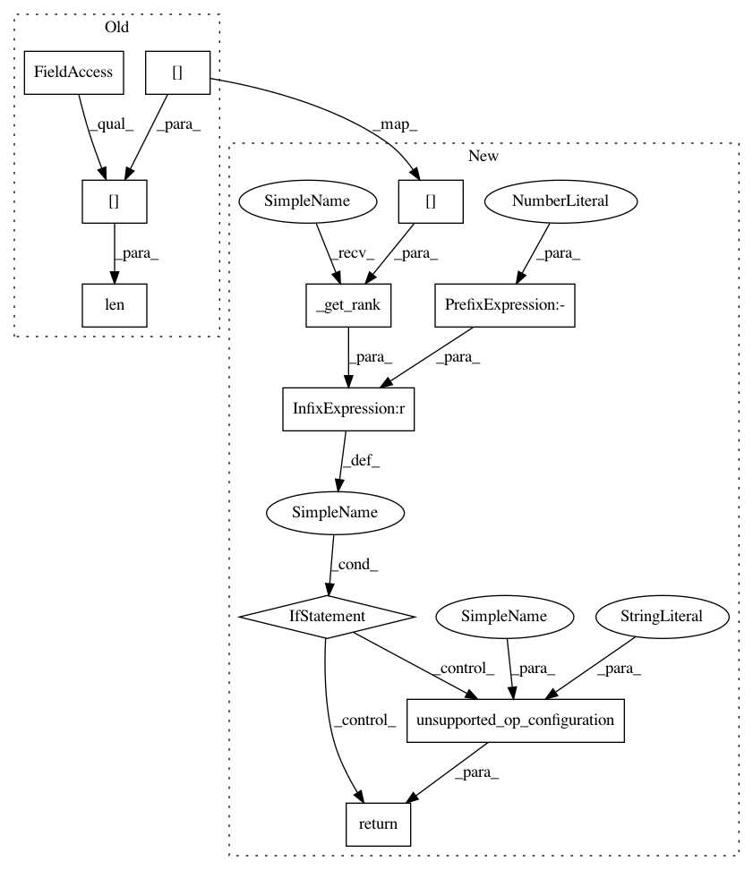

c36bfefbf84ce280195e9589e44aac3ee688b11d,onnx_coreml/_operators_nd.py,,_convert_reverse_sequence,#Any#Any#Any#Any#,1562
Before Change
if add_transpose:
output_name_post = "_before_reverse"
rank = len(graph.shape_dict[node.inputs[0]])
axes = list(range(rank))
axes[batch_axis], axes[time_axis] = axes[time_axis], axes[batch_axis]
builder.add_transpose(
name=node.name+"_transpose",
After Change
if add_transpose:
output_name_post = "_before_reverse"
rank = builder._get_rank(node.inputs[0])
if rank == -1:
return err.unsupported_op_configuration(builder, node, graph, "Rank unknown for input")
axes = list(range(rank))
axes[batch_axis], axes[time_axis] = axes[time_axis], axes[batch_axis]
builder.add_transpose(
name=node.name+"_transpose",
In pattern: SUPERPATTERN
Frequency: 3
Non-data size: 11
Instances
Project Name: onnx/onnx-coreml
Commit Name: c36bfefbf84ce280195e9589e44aac3ee688b11d
Time: 2019-09-11
Author: bhushan.s.94@gmail.com
File Name: onnx_coreml/_operators_nd.py
Class Name:
Method Name: _convert_reverse_sequence
Project Name: onnx/onnx-coreml
Commit Name: c36bfefbf84ce280195e9589e44aac3ee688b11d
Time: 2019-09-11
Author: bhushan.s.94@gmail.com
File Name: onnx_coreml/_operators_nd.py
Class Name:
Method Name: _convert_transpose
Project Name: onnx/onnx-coreml
Commit Name: c36bfefbf84ce280195e9589e44aac3ee688b11d
Time: 2019-09-11
Author: bhushan.s.94@gmail.com
File Name: onnx_coreml/_operators_nd.py
Class Name:
Method Name: _convert_lstm